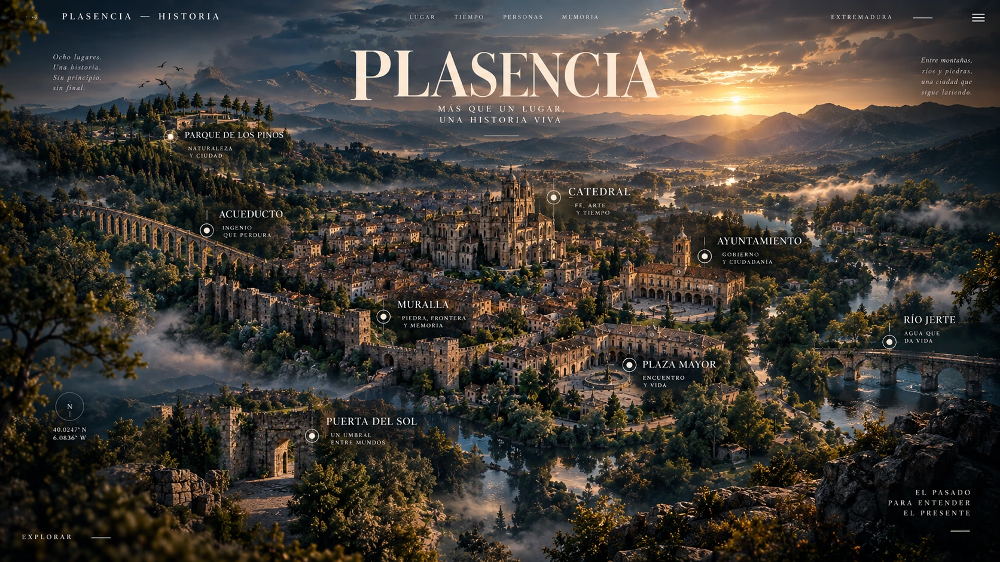

Saltar al recorrido
PLASENCIA
Historia
LUGAR · TIEMPO · PERSONAS · MEMORIA
Modo lectura
Capítulos
＋

PLASENCIA · HISTORIA
Más que un lugar,
una historia viva.
Elige un lugar o comienza el recorrido.
Muralla
Puerta del Sol
Plaza Mayor
Catedral
Ayuntamiento
Acueducto
Parque de los Pinos
Alfonso VIII
Comenzar el viaje
↓
Preparando la novela…